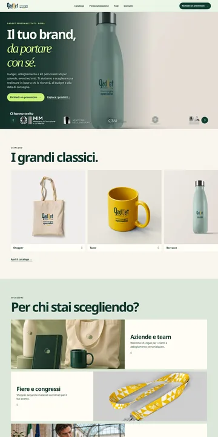

Cinque idee per la homepage.
Apri una proposta e scorri oltre la hero video per esplorare il layout.
- EditorialeImmagini a tutta sezione e composizioni asimmetriche↗Scarica la tavola
- BentoTessere di diverse dimensioni e catalogo a mosaico↗Scarica la tavola
- StudioTre ambienti da esplorare con fotografie immersive↗Scarica la tavola

LookbookVetrine orizzontali, prodotti in grande formato↗Scarica la tavola- PercorsoDall’idea alla consegna, con una timeline verticale↗Scarica la tavola